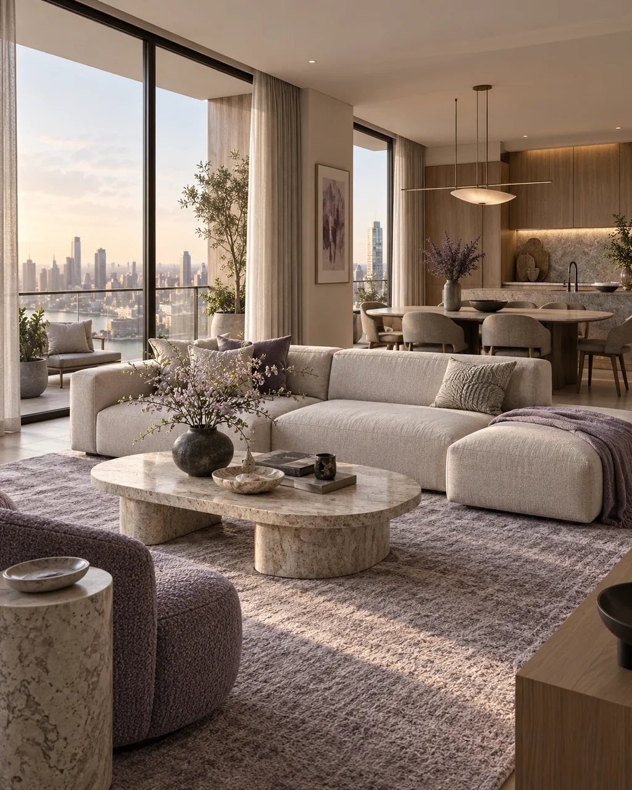
01 / 03
RENDERS EXISTENTES
¿Ya tienes renders de tu proyecto?
Los utilizamos como punto de partida para desarrollar una experiencia tridimensional navegable, incorporando recorridos, información comercial y una interfaz personalizada.
01ESPACIOS QUE PUEDES EXPLORAR
Gemelos digitales para presentar, explorar y comercializar proyectos arquitectónicos.
Permite que tus clientes recorran una propiedad desde cualquier lugar, incluso antes de que esté construida.
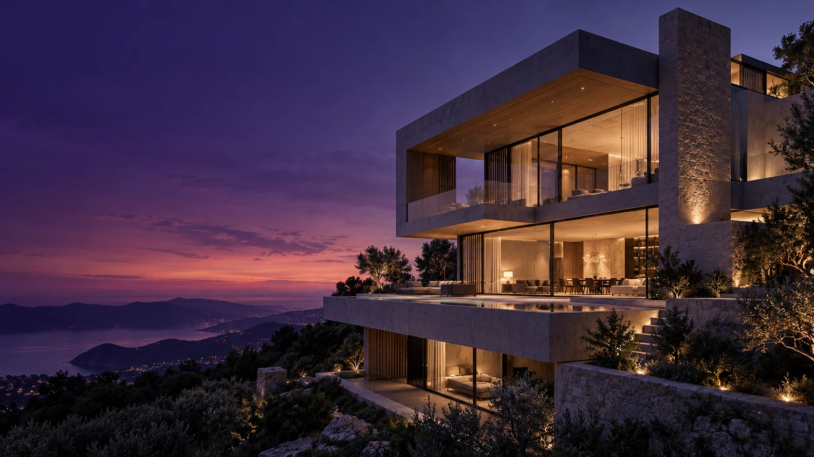
02QUÉ ES UN GEMELO DIGITAL
un espacio. infinitas perspectivas.
Un gemelo digital es una representación tridimensional interactiva de un espacio real o proyectado.
Puedes recorrer sus ambientes, cambiar de perspectiva y explorar su información desde una página web.
Una experiencia espacial que puedes compartir mediante un enlace.
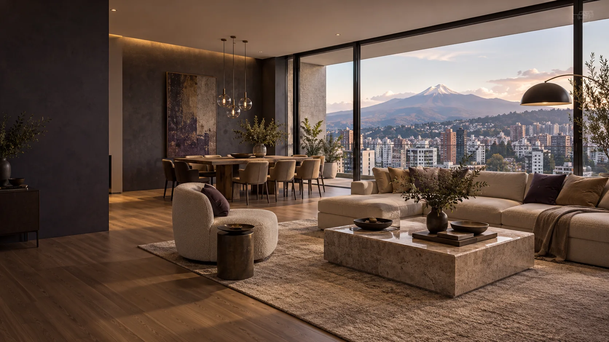
03COMERCIALIZACIÓN INMOBILIARIA
Presenta departamentos y edificios mientras todavía están en construcción.
Permite que compradores en Ecuador, Estados Unidos o cualquier otro país recorran las propiedades desde su teléfono o computadora.
Convierte ferias inmobiliarias, reuniones comerciales y presentaciones de preventa en experiencias interactivas.
Integra planos, selección de departamentos, puntos interactivos, fotografías, galerías, videos y contacto comercial.
04CÓMO CREAMOS LOS ESPACIOS

¿Ya tienes renders de tu proyecto?
Los utilizamos como punto de partida para desarrollar una experiencia tridimensional navegable, incorporando recorridos, información comercial y una interfaz personalizada.
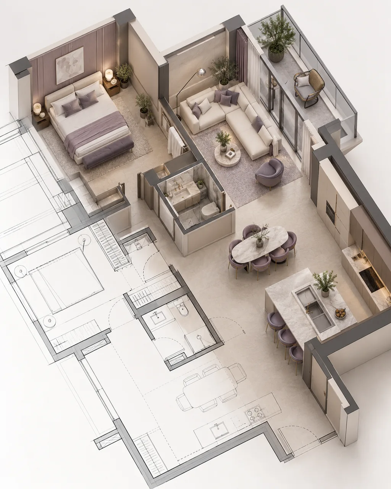
¿Tienes los planos y una idea de cómo será el resultado?
Creamos representaciones arquitectónicas tridimensionales a partir de planos, fotografías y referencias, incluyendo materiales, iluminación, mobiliario y acabados.
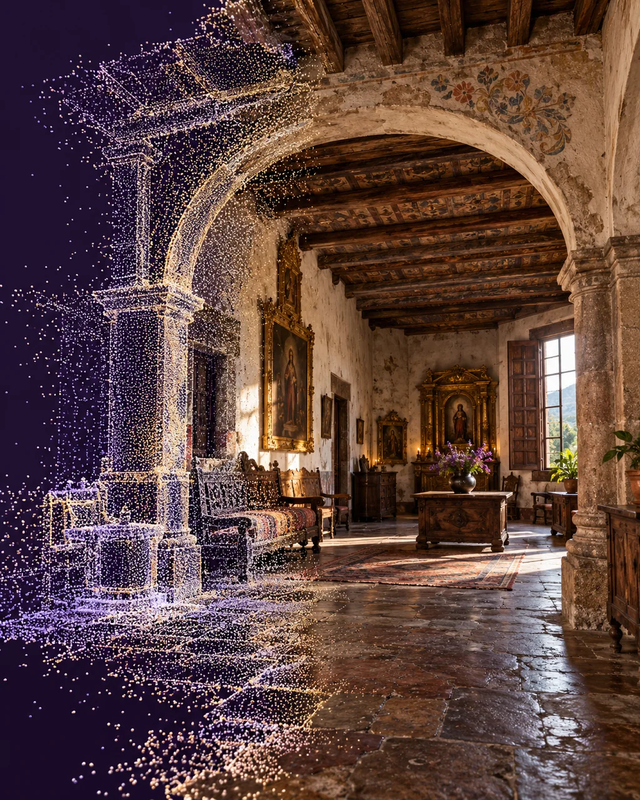
¿El espacio ya está construido?
Realizamos escaneos tridimensionales fotorrealistas mediante captura fotográfica para reproducir digitalmente sus materiales, texturas y detalles arquitectónicos.
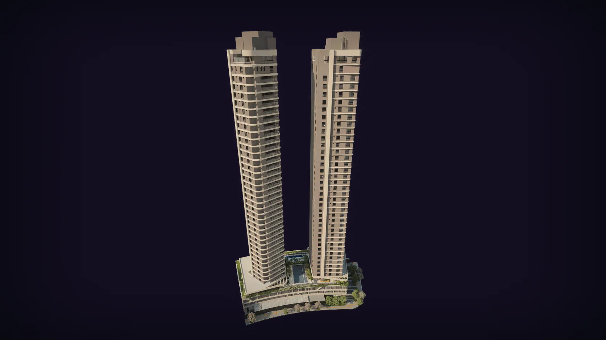
05UNA EXPERIENCIA REAL
TORRES DEL NORTE
Un edificio tridimensional interactivo con selección de departamentos, recorridos interiores, planos y exploración de ambientes.
Cuatro entornos tridimensionales. Una experiencia web.
INGRESAR AL RECORRIDO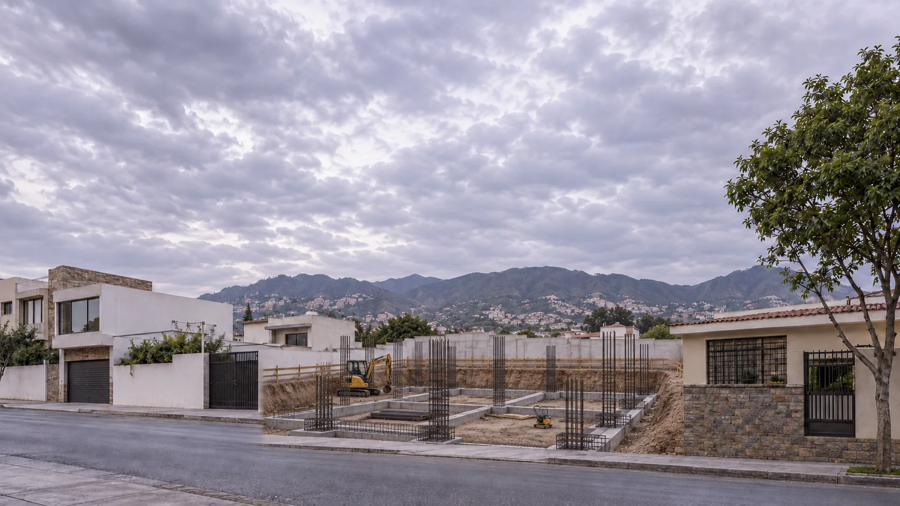
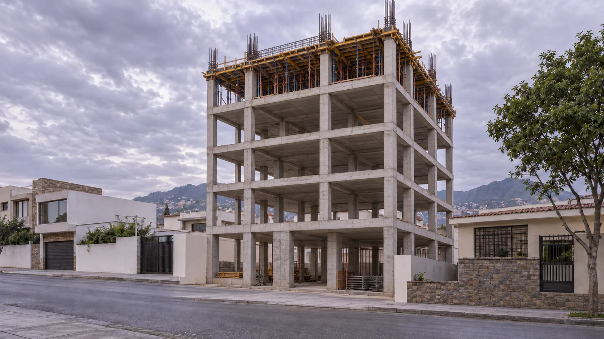
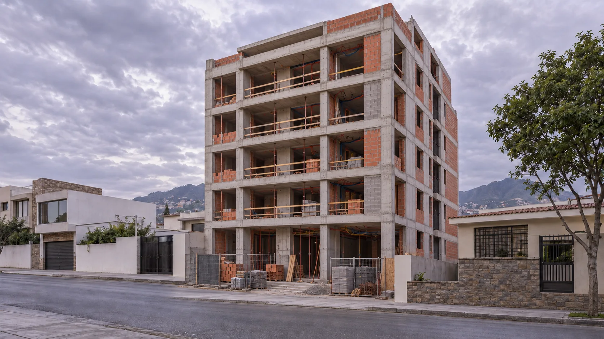
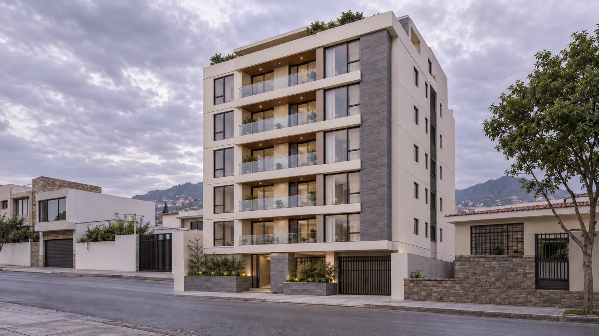
06GEMELOS DIGITALES EN CONSTRUCCIÓN
Documenta y visualiza la transformación de un proyecto arquitectónico a lo largo de su construcción.
El proyecto toma forma desde sus primeras estructuras.
Columnas, vigas y losas definen la arquitectura del edificio.
Aparecen los ambientes, las divisiones y los sistemas constructivos.
La obra alcanza su configuración final, con materiales, interiores y espacios terminados.
Un registro tridimensional de la evolución del proyecto, organizado para explorar y presentar sus distintas etapas.
SECUENCIA ARQUITECTÓNICA ILUSTRATIVA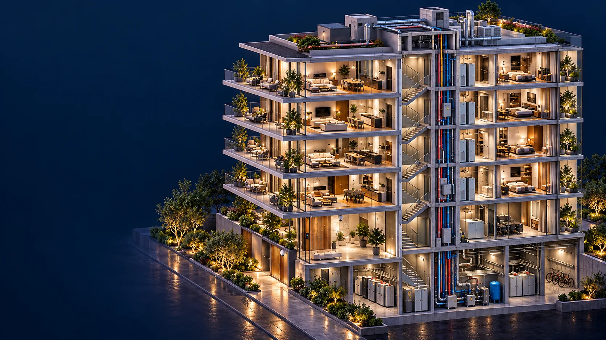
07GEMELOS DIGITALES OPERACIONALES
Cuando el proyecto entra en funcionamiento, su representación digital puede continuar evolucionando.
Sensores, cámaras, instalaciones y sistemas pueden integrarse en una plataforma de visualización espacial.
Información del edificio organizada directamente sobre su representación tridimensional.
CAPACIDAD DE AMPLIACIÓN · INTEGRACIÓN A MEDIDA
08HAGAMOS VISIBLE LO QUE IMAGINAS
Creamos experiencias tridimensionales para constructoras, promotoras e inmobiliarias.
Desde un departamento hasta complejos arquitectónicos completos.
Gemelos digitales para departamentos estándar desde USD 700, según la complejidad y los materiales disponibles.